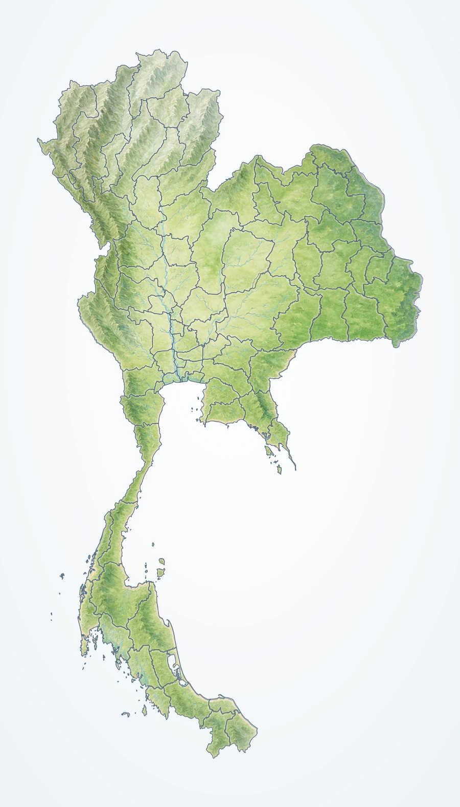

태국 명소로 N(으)로 유명해요 문장 만들기
지도 명소 문장 만들기
지역 → 장소 → 명물을 눌러 문장을 완성하세요.
중부·서부
N(으)로 유명해요
도시·섬 핀
100%

지도 이미지 출처와 제작 방식
행정 경계는 NordNordWest·Pratchhemapanpairo의 Thailand provinces th (CC0)에서 태국의 주 경계만 분리해 보존하고, 이미지 생성 지형 질감을 합성했습니다. 지도 안의 글자와 핀은 웹 화면에서 별도로 제공합니다.